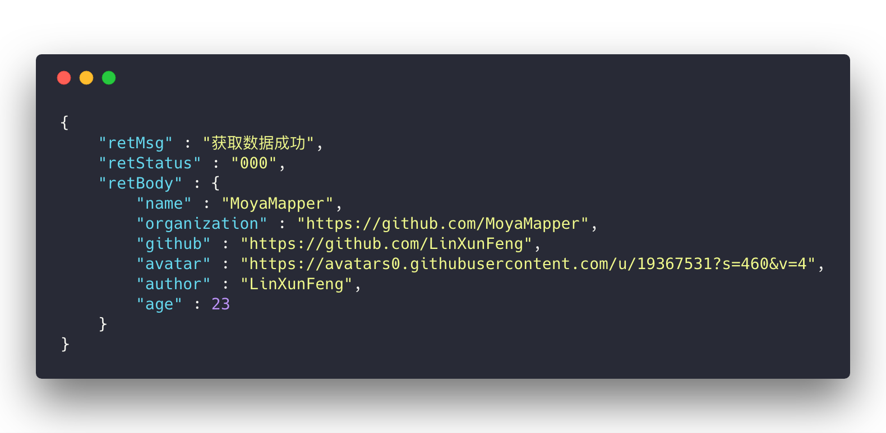
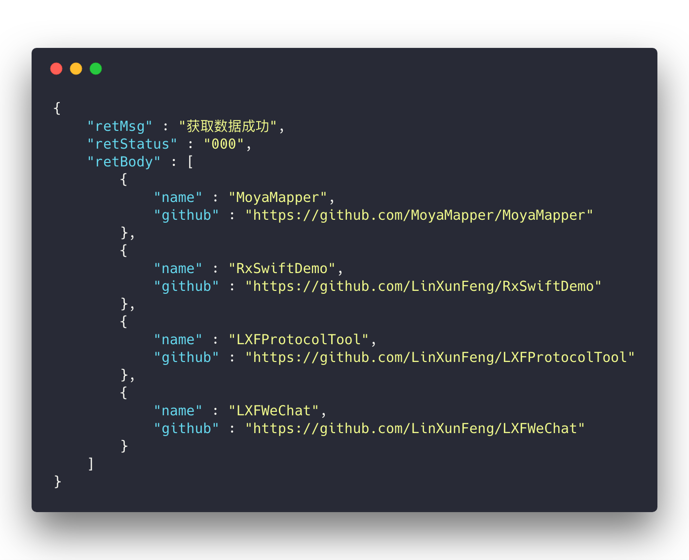
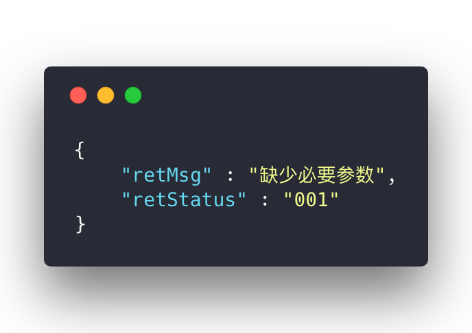

Model¶
一、定义Model¶

支持模型自动映射，不需要考虑源json数据的真实类型，这里统一按
Model中属性声明的类型进行转换
- 一般情况下如下写法即可
struct CompanyModel: Modelable {
var name : String = ""
var catchPhrase : String = ""
init() { }
}
- 如果键名需要自定义，则可以实现方法
mutating func mapping(_ json: JSON)
struct CompanyModel: Modelable {
var name : String = ""
var catchPhrase : String = ""
init() { }
mutating func mapping(_ json: JSON) {
self.name = json["nickname"].stringValue
}
}
- 支持模型嵌套
struct UserModel: Modelable {
var id : String = ""
var name : String = ""
var company : CompanyModel = CompanyModel()
init() { }
}
二、Response --> Model¶
1、以下示例皆使用了
MoyaMapperPlugin，所以不需要指定解析路径2、如果没有使用
MoyaMapperPlugin则需要指定解析路径，否则无法正常解析ps:
解析路径可以使用a>b这种形式来解决多级路径的问题
如果接口请求后 json 的数据结构与下图类似，则使用 MoyaMapper 是最合适不过了
// Normal
let model = response.mapObject(MMModel.self)
print("name -- \(model.name)")
print("github -- \(model.github)")
// 打印json
print(response.fetchJSONString())
// Rx
rxRequest.mapObject(MMModel.self)
.subscribe(onSuccess: { (model) in
print("name -- \(model.name)")
print("github -- \(model.github)")
}).disposed(by: disposeBag)

// Normal
let models = response.mapArray(MMModel.self)
let name = models[0].name
print("count -- \(models.count)")
print("name -- \(name)")
// 打印 json 模型数组中第一个的name
print(response.fetchString(keys: [0, "name"]))
// Rx
rxRequest.mapArray(MMModel.self)
.subscribe(onSuccess: { models in
let name = models[0].name
print("count -- \(models.count)")
print("name -- \(name)")
}).disposed(by: disposeBag)

// Normal
let (isSuccess, tipStr) = response.mapResult()
print("isSuccess -- \(isSuccess)")
print("tipStr -- \(tipStr)")
// Rx
rxRequest.mapResult()
.subscribe(onSuccess: { (isSuccess, tipStr) in
print("isSuccess -- \(isSuccess)") // 是否为 "000"
print("retMsg -- \(retMsg)")
}).disposed(by: disposeBag)
三、Misc¶
关于 Model 还提供了一些其它比较有用的方法
1.2.3版本开始已支持将 Data、字典、json字符串 等转为 Modelable，
/// Modelable -> mapping -> Model
static func mapModel(from object: Any) -> Self
/// Modelable -> mapping -> Models
static func mapModels(from object: Any) -> [Self]
/// Codeable -> Model
static func codeModel(from object: Any) -> Self
/// Codeable -> Models
static func codeModels(from object: Any) -> [Self]
Example
let model = models[0]
let jsonData = model.toData()
let jsonDict = model.toDictionary()
let jsonString = model.toJSONString()
let model1 = MyModel.mapModel(from: jsonData!)
let model2 = MyModel.mapModel(from: jsonDict)
let model3 = MyModel.mapModel(from: jsonString)
这里重点提一下 mapModel 与 codeModel 的区别，这里以 toJSONString 为例
let originModels = response.mapArray(MyModel.self)
let jsonArrStr = originModels.toJSONString()
let models1 = MyModel.mapModels(from: jsonArrStr)
let models2 = MyModel.codeModels(from: jsonArrStr)
let model = originModels[0]
let jsonStr = model.toJSONString()
let model1 = MyModel.mapModel(from: jsonStr)
let model2 = MyModel.codeModel(from: jsonStr)
log.debug("model1 -- \(model1)")
log.debug("model2 -- \(model2)")
打印结果
model1 -- MyModel(_id: "5a8f5681421aa9133784f94b", created: "")
model2 -- MyModel(_id: "5a8f5681421aa9133784f94b", created: "2018-02-23T07:47:12.993Z")
- 调用
toJSONString()可将Model转为 json 字符串，如："{\"name\" : \"LinXunFeng\"}" mapModel与codeModels都可以将Data、字典、json字符串等 转成对应的ModelablecodeModel是仅以Codable的解析mapModel会先调用codeModel， 再调用Model的mapping(_ json: JSON)方法
❗在
模型中定义的属性名与后台返回的json中的字段名不一致时，需要调用mapModel方法来转换出Modelable。如果没有出入，那调用mapModel或者codeModel的效果是一样。❗如果是通过
mapModel转换出Modelable后，再转换出来Data/字典/JSON字符串，那转换出来的这个数据是已经通过mapping修正过的了，这时要想再转换为Modelable就得使用codeModel方法！因为修正后，之前有出入的字段已经没有了。
mapModels和codeModels也是一样，请参考上述内容。
以下的方法就不再赘述
func toData() -> Data?
func toDictionary() -> [String: Any]
func toJSON() -> JSON